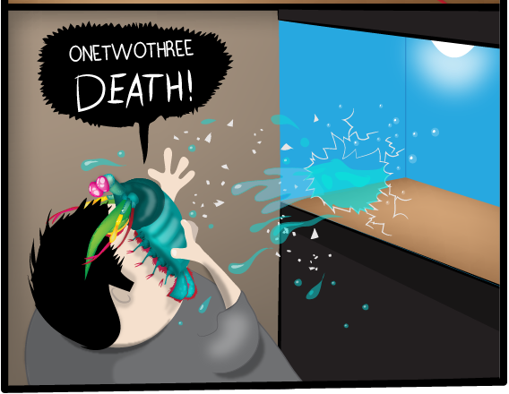

Fatos sobre o Stomatopoda.
Ta saindo da jaula o montro
Stomatopoda (ou estomatópode), chamados popularmente de tamarutacas ou de lacraias-do-mar no Brasil, é uma ordem de crustáceos marinhos da subclasse Hoplocarida, que agrupa cerca de 400 espécies, caracterizadas principalmente pela morfologia da segunda pata torácica, que é modificada em apêndice subquelado, lembrando uma pata de louva-a-deus.
| Classificação científica | |
|---|---|
| Reino: | Animalia |
| Filo: | Arthropoda |
| Subfilo: | Crustacea |
| Classe: | Malacostraca |
| Subclasse: | Hoplocarida |
| Ordem: | Stomatopoda |
Dentre 400 espécies, o ‘Odontodactylus scyllarus’ é o que desfere um golpe mais violento: seu soco chega a 80 quilômetros por hora, aceleração semelhante a uma arma calibre .22. Com uma pressão resultante de 60 quilos por centímetro quadrado, o bicho consegue facilmente quebrar a carapaça de um caranguejo – ou até mesmo o vidro de um aquário.
Olhos impressionates
A maioria das pessoas tem três tipos de células de detecção de luz, ou fotorreceptores, que são sensíveis à luz vermelha, verde e azul. Quando se trata de visão colorida, as borboletas estão quase no topo da cadeia alimentar mas o stomatopoda tem uma visão melhor do que a borboleta. o camarão mantis vive em águas mornas e rasas, e normalmente chega a ter entre 15 e 30 centímetros de comprimento,e esta criatura maravilhosa não tem dois, nem três, nem cinco, mas dezesseis cones receptivos à cor. O arco-íris que vemos origina-se de apenas três cores, então tente imaginar um arco-íris de louva-a-deus criado a partir de dezesseis cores. onde vemos um arco-íris, o camarão mantis vê uma BOMBA TERMONUCLEAR de luz e beleza.